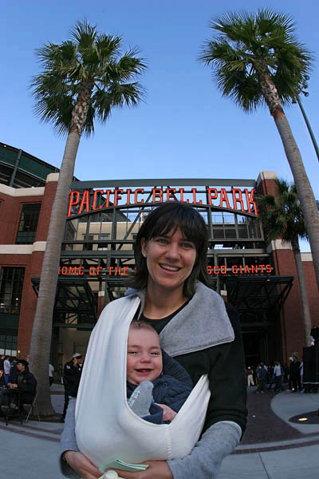
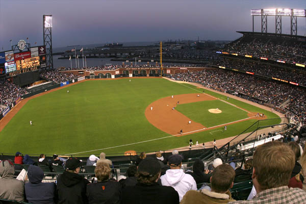
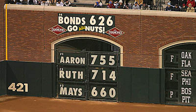
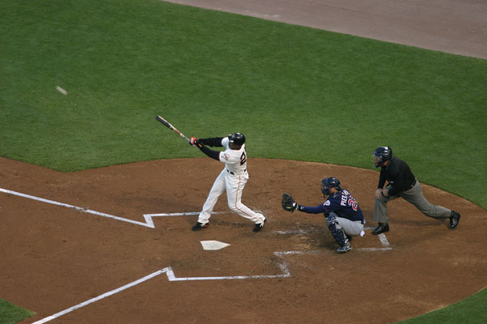
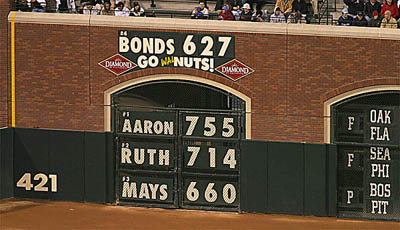
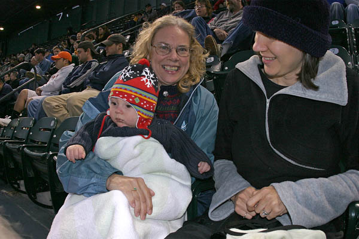

Gryffin's First Baseball Game |
|---|

The San Francisco Giants host the Minnesota Twins
|
|

Our seats were up high, but the view was great |
|

The Barry stats got ... |
|

... Updated! |
|

The seven was in place before Bonds was off the field. |
|

Gryffin takes the Giants loss in stride, while the Twins fans celebrate. We'll get 'em next time, lil' buddy! Giants 4 - Twins 6 |